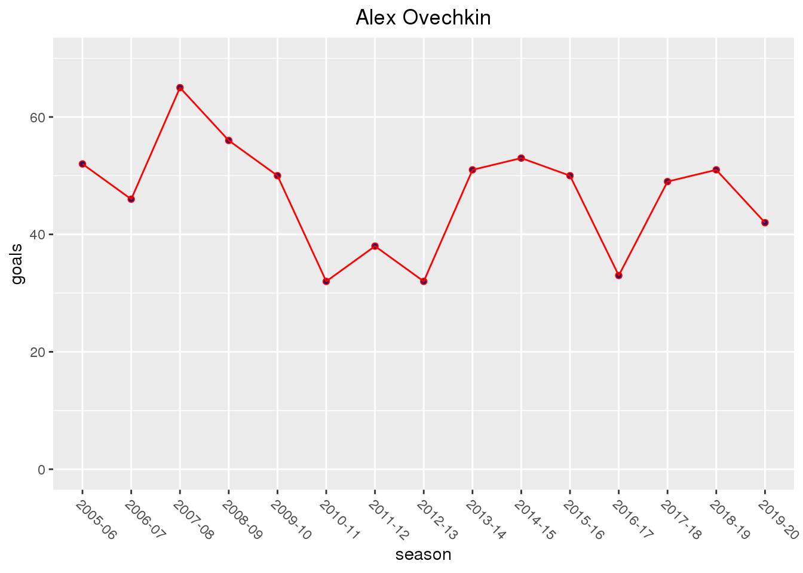
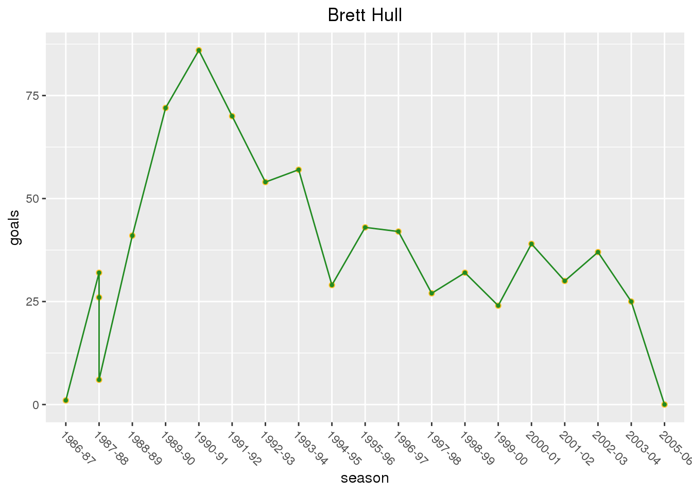
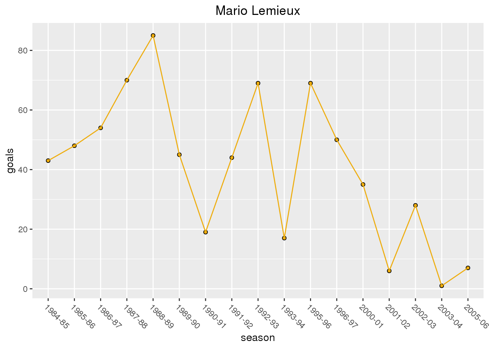
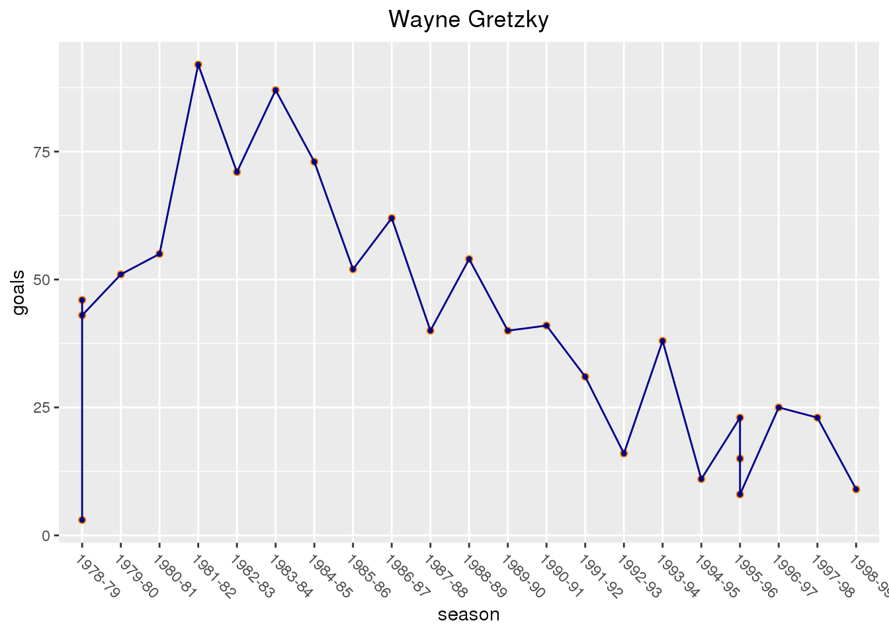
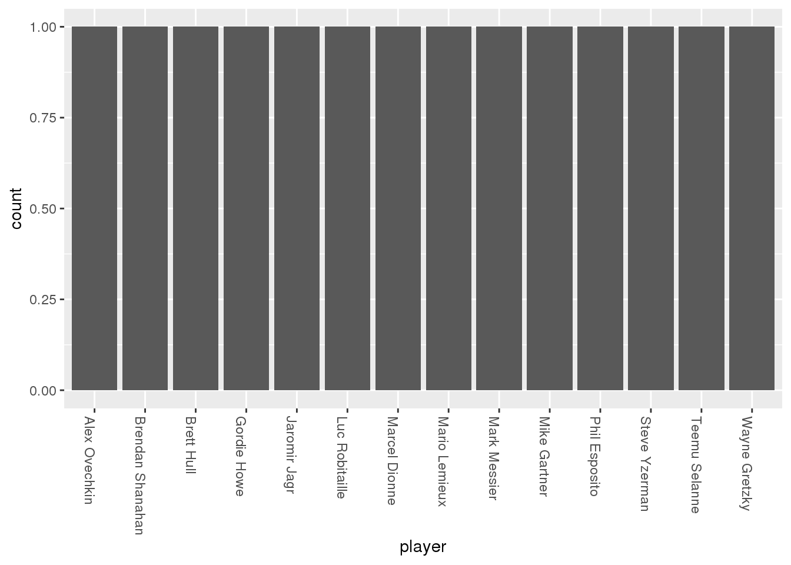

Data
In this project I will be examining NHL goal data using the game_goals.csv dataset from HockeyReference.com (they put out the other two datasets used in this post as well) that they put out after future hall-of-famer Alexander Ovechkin scored his 700th career goal. The data consists of 49384 observations of 25 variables. The variable season represents each NHL season from 2006 to 2018.
The second dataset I will be using is the season_goals.csv. The player variable represents the individual players. The goals variable represents the number of goals an individual scored in one season.
library(tidyverse)
game_goals <- read_csv("game_goals.csv")
season_goals <- read_csv("season_goals.csv")
top_250_career <- read_csv("top_250.csv")Question 1
Everyone who knows anything about hockey understands that Ovechkin is a prolific goal scorer, but how does he measure up against the other great goal scorers in NHL history?
# filter to only include seasons of >= 60 goals scored
GOAT_goal_scorers <- season_goals %>%
filter(goals > 60)I filtered out the data to only count seasons where a player scored 60 or more goals, because 1) there was too much data otherwise, and 2) it gives a better sense of who had the most seasons with a way-above-average number of goals scored.
ggplot(GOAT_goal_scorers, mapping = aes(player, goals, fill = player)) +
geom_boxplot() +
theme(axis.text.x = element_text(angle = -90, hjust = 0)) +
theme(legend.position = "None") +
# this is just so the color of the boxplots match the team, ore one of the teams, the player played for
scale_fill_manual(values = c("Alex Ovechkin" = "red4", "Alexander Mogilny" = "navy", "Bernie Nicholls" = "gray4", "Bobby Hull" = "red4", "Brett Hull" = "green4", "Jari Kurri" = "orangered", "Jaromir Jagr*" = "yellow3", "Lanny McDonald" = "red3", "Luc Robitaille" = "darkorchid4", "Mario Lemieux" = "yellow2", "Mike Bossy" = "chocolate1", "Phil Esposito" = "gold", "Reggie Leach" = "darkorange", "Steve Yzerman" = "red3", "Teemu Selanne" = "navyblue", "Wayne Gretzky" = "mediumblue"))
This graphic gives an interesting insight into Ovechkin’s place among the all-time goal scoring greats in the history of the NHL. He has one 60+ goal season, which puts him in elite company. However, he still isn’t quite on the level of other all-time great goal scorers like Wayne Gretzky, they call him “The Great One” for a reason, Brett Hull, and Mario Lemieux.
However, this graph is not the end all be all in determining the caliber of goal scorer. Maurice “Rocket” Richard played for the Montreal Canadiens from 1942-1960 and was an elite goal scorer, just look at his then record 544 career goals upon retirement. He was so elite that the Maurice “Rocket” Richard Trophy, also known as the Rocket Richard Trophy, that is awarded annually to the leading goal scorer in the National Hockey League is named after him. However, he played in the Original Six era where they played 70 games a season compared to 80 games a season when Gretzky started out, and the 82 games played each season in the modern day. Because of this Richard never scored 60+ goals in one season, but that shouldn’t automatically exclude him (and other Original Six Era greats like Gordie Howe for that matter) from the discussion of best goal scorers of all time.
Question 2
My next question that I want to investigate is how Ovechkin’s path as a prolific goal scorer in his career compares to the career trajectories of the other greats that stood out in the previous graphic: Wayne Gretzky, Mario Lemieux, and Brett Hull.
season_goals %>%
filter(player == "Alex Ovechkin") %>%
ggplot(season_goals, mapping = aes(season, goals)) +
geom_point(shape=21, color = "red", fill = "midnightblue") +
geom_line(color="red", group = 1) +
theme(axis.text.x = element_text(angle = -45, hjust = 0)) +
ggtitle("Alex Ovechkin") +
theme(plot.title = element_text(hjust = 0.5)) +
ylim(0, 70)
season_goals %>%
filter(player == "Brett Hull") %>%
ggplot(season_goals, mapping = aes(season, goals)) +
geom_point(shape=21, color = "goldenrod1", fill = "forestgreen") +
geom_line(color="forestgreen", group = 1) +
theme(axis.text.x = element_text(angle = -45, hjust = 0)) +
ggtitle("Brett Hull") +
theme(plot.title = element_text(hjust = 0.5))
season_goals %>%
filter(player == "Mario Lemieux") %>%
ggplot(season_goals, mapping = aes(season, goals)) +
geom_point(shape=21, color = "gray0", fill = "darkgoldenrod2") +
geom_line(color="darkgoldenrod2", group = 1) +
theme(axis.text.x = element_text(angle = -45, hjust = 0)) +
ggtitle("Mario Lemieux") +
theme(plot.title = element_text(hjust = 0.5))
season_goals %>%
filter(player == "Wayne Gretzky") %>%
ggplot(season_goals, mapping = aes(season, goals)) +
geom_point(shape=21, color = "darkorange", fill = "darkblue") +
geom_line(color="darkblue", group = 1) +
theme(axis.text.x = element_text(angle = -45, hjust = 0)) +
ggtitle("Wayne Gretzky") +
theme(plot.title = element_text(hjust = 0.5)) For certain players there are years where there are 3 dots representing total goals in a season instead of one. This is represents a year in which the player was traded, so there is a dot representing goals scored with each team, and a dot representing total goals. Brett Hull was traded from the Calgary Flames to the St. Louis Blues in the 1987-1988 season. He scored 26 goals with Calgary, 6 goals with St. Louis, and 32 overall. *Wayne Gretzky was traded twice. While the Edmonton Oilers were still in the WHA Gretzky was traded to them by the Indianapolis Racers in the 1978-1979 season. He scored 3 goals with Indianapolis, 43 goals with Edmonton, and 46 total. The second trade was in the 1995-1996 season when the Los Angeles Kings traded him to the St. Louis Blues. He scored 15 goals with Los Angeles, 8 goals with St. Louis, and 23 goals total.
When comparing the data there is one factor that separates Ovechkin from Hull, Lemieux, and Gretzky: Ovechkin is the only one that does not have an 80 goal season. Since Ovechkin’s strongest trait is goal scoring this could possibly hurt his reputation as one of the best goal scorers. However, the outlook for Ovechkin may not be as grim as that last statement made it seem. Super Mario’s 85 goal season was a large outlier, and this can be seen on the boxplot that represents his production in question 1. Brett Hull’s 86 goal season in 1990-1991 was not an outlier, but his production steadily went down the rest of his career. Gretzky had multiple but, he is called “The Great One” for a reason. But of the four players Ovechkin had the most instant impact with 52 goals in his rookie season. This is the most for a rookie season compared to the other three. Hull had 26, Lemieux had 43, and Gretzky had 46. On top of this, Ovechkin has never had a season where he scored under 30 goals whereas after their amazing seasons the other three players regressed. Ovechkin doesn’t have the best individual goal scoring seasons of the four, but he is the most consistent.
Question 3
My final question is where does Ovechkin fall on the list of total career goals, and whether or not it is possible for him to eventually set the record for most career goals before he retires.
top_250_career %>%
filter(total_goals > 650) %>%
ggplot(top_250_career, mapping = aes(x = player, stat = total_goals)) +
geom_bar() +
theme(axis.text.x = element_text(angle = -90, hjust = 0))